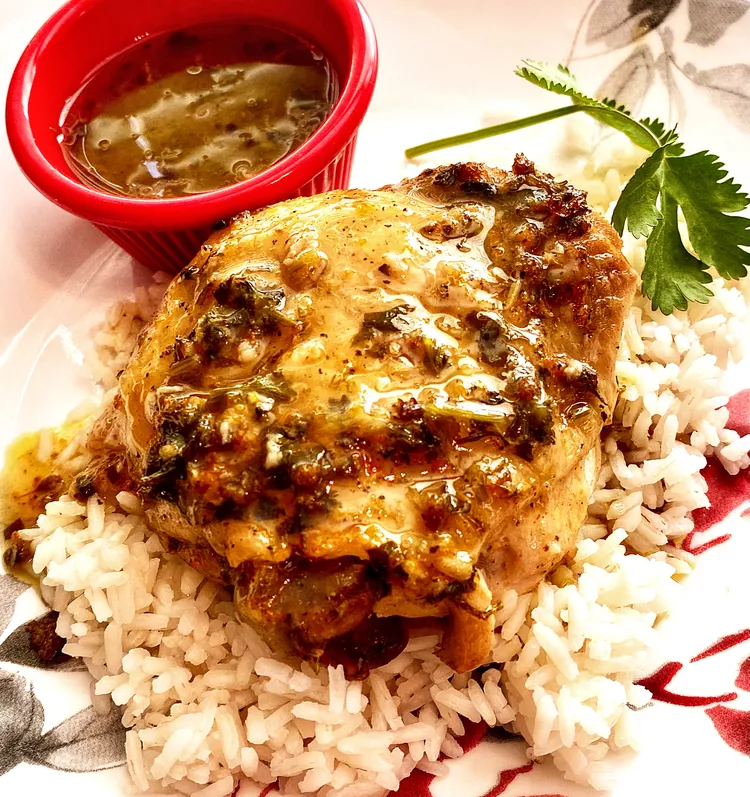

Slow Cooker Mojo Chicken

Description
Slow Cooker Mojo Chicken is fall-off-the-bone tender. Allow enough time to marinate the chicken thighs, the longer the better. I serve the thighs over white rice and spoon some sauce over chicken. I also serve additional sauce on the side.
Ingredients
- 3/4 cup freshly squeezed orange juice
- 1/2 cup freshly squeezed lime juice
- 1/2 cup extra-virgin olive juice
- 1/4 cup chopped fresh cilantro
- 6 cloves garlic, pressed
- 2 medium oranges, zested
- 1 medium lime, zested
- 2 tablespoons dried oregano
- 1 1/2 teaspoons salt
- 1 teaspoon black pepper
- 1 teaspoon ground cumin
- 2 bay leaves
- 4 (6oz) bone-in chicken thighs
Cooking Steps
- Combine orange juice, lime juice, olive oil, cilantro, garlic, orange zest, lime zest, oregano, salt, pepper, cumin, and bay leaves in a large resealable bag. Add chicken thighs, coat with marinade, squeeze out excess air, and seal the bag. Marinate in the refrigerator for at least 6 hours or overnight. Flip the bag over occasionally and rub over chicken thighs to evenly distribute marinade.
- Place chicken and marinade in a slow cooker. Cook on Low until chicken is no longer pink at the bone and the juices run clear, 4 to 5 hours. An instant-read thermometer inserted near the bone should read 165 degrees F (74 degrees C).